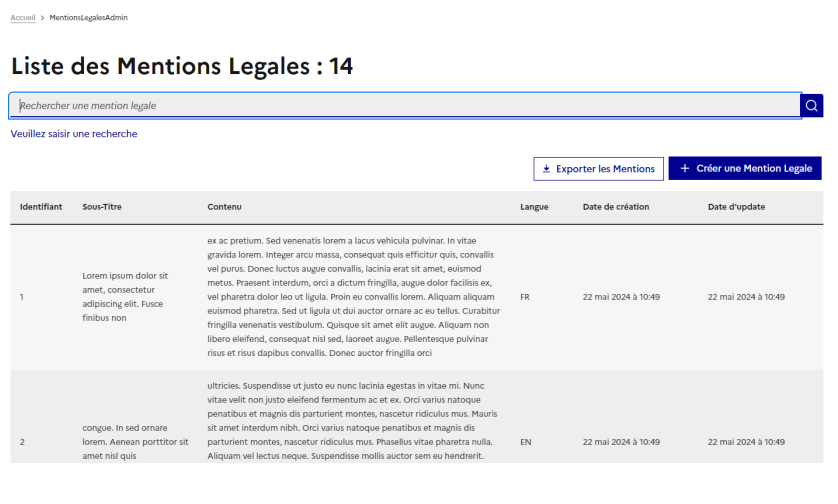
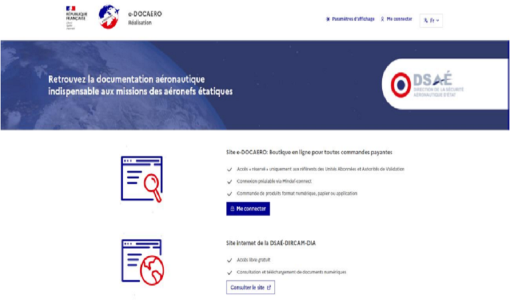
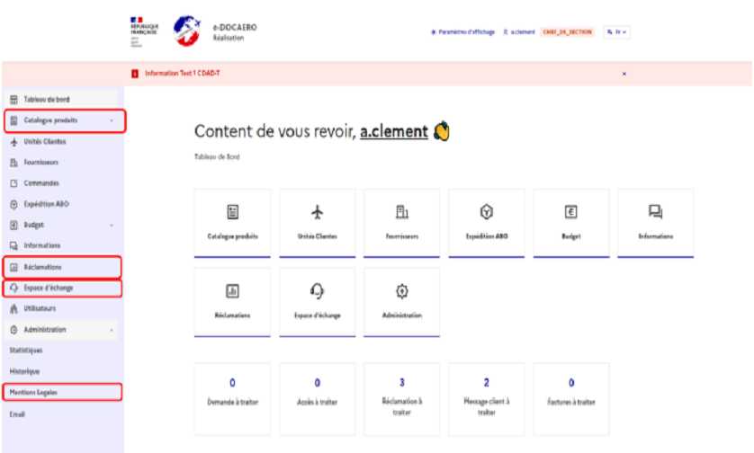
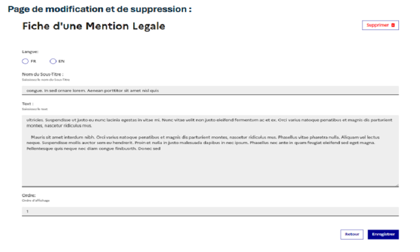

Edocaero - Site de vente de cartes aéronavales
Description
Edocaero a été le premier projet de stage que j'ai réalisé, il a été
très compliqué à installer sur un environnement Windows car nous
n'avions pas les droits administrateurs. L'installation et
configuration a prit plusieurs jours pendant lesquels nous avons
profité pour apprendre les bases de React notamment via les cours de
notre chef de projet mais aussi grâce à Open Classroom. En effet,
n'ayant jamais cottoyé Node et React, c'était assez compliqué de
s'acclimater à ce changement de langage. Une fois l'application prise
en main, j'ai dû réaliser un CRUD (Create, Read, Update, Delete) de la
page Accessibilité de cette application. C'était assez compliqué au
début mais cela s'est facilité avec le temps. J'avais ensuite à faire
le Frontend avec un tableau regroupant les informations et le remplir
via une API REST.
Captures d'écran




Compétences travaillées
Nous avons un tableau sur lequel nous devons référencer les
compétences travaillées lors de chaque projet.
Pour Nolark, nous avons mobilisé les compétences ci-dessous :
• Gérer le patrimoine informatique : Connexion à l’API avec des grades, différents niveaux d’habilitation
• Répondre aux incidents et aux demandes d’assistance et d’évolution : Ajout de nouvelle features après l’analyse du chef de projet
• Développer la présence en ligne de l’organisation : Création d’un repositories GitLab pour le projet
• Travailler en mode projet : Répartition des tâches entre les différents participants du projet, Enzo et moi
• Mettre à disposition des utilisateurs un service informatique : Réalisation de tests unitaires pour chaque page du CRUD
• Organiser son développement professionnel : Utilisation de divers forum et site expliquant node.js, le TypeScript, Express .... Pour ensuite le mettre en place dans le projet. (StackOverflow)
Pour Nolark, nous avons mobilisé les compétences ci-dessous :
• Gérer le patrimoine informatique : Connexion à l’API avec des grades, différents niveaux d’habilitation
• Répondre aux incidents et aux demandes d’assistance et d’évolution : Ajout de nouvelle features après l’analyse du chef de projet
• Développer la présence en ligne de l’organisation : Création d’un repositories GitLab pour le projet
• Travailler en mode projet : Répartition des tâches entre les différents participants du projet, Enzo et moi
• Mettre à disposition des utilisateurs un service informatique : Réalisation de tests unitaires pour chaque page du CRUD
• Organiser son développement professionnel : Utilisation de divers forum et site expliquant node.js, le TypeScript, Express .... Pour ensuite le mettre en place dans le projet. (StackOverflow)